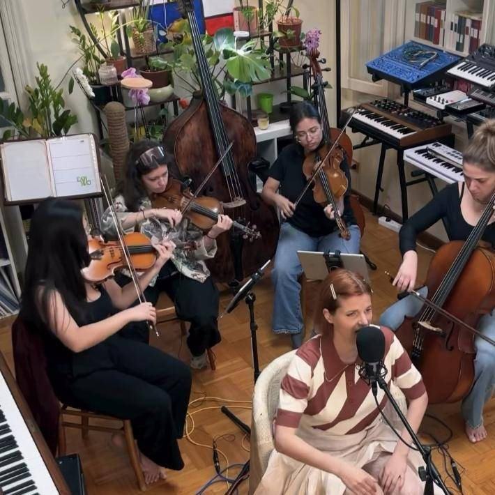
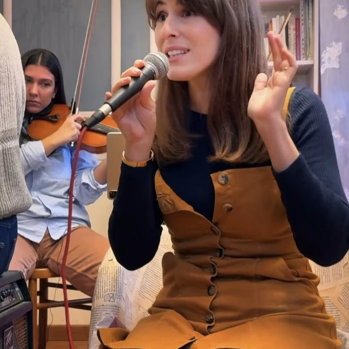
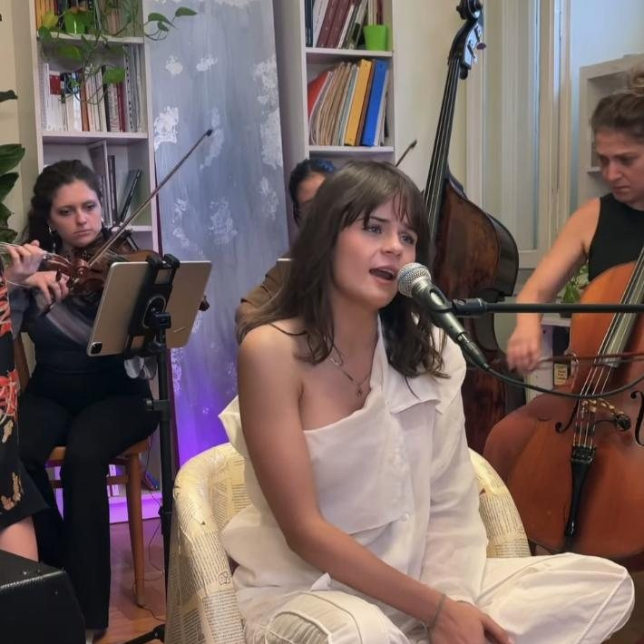
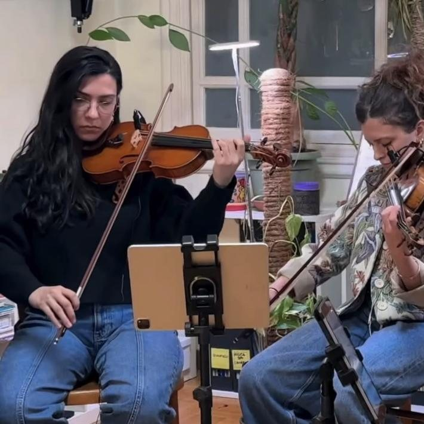

9PM Sessions è un format di live session che riporta il musicista classico al centro della performance: un quartetto d’archi, un artista ospite, un suo brano riarrangiato e registrato dal vivo.
Due stagioni, 78 uscite, un pubblico costruito soltanto in organico. In queste pagine raccontiamo il progetto a chi vuole sostenerlo: da dove parte, dove è arrivato e dove sta andando.
9PM nasce a Roma alla fine del 2024 da un quartetto d’archi: Amalia Candido e Giulia Gentile ai violini, Luicelis Vasquez alla viola, Livia De Romanis al violoncello. Una formazione classica e una curiosità dichiarata per pop, indie, elettronica e jazz.




Format
Invitiamo un artista, riarrangiamo un suo brano per archi e lo registriamo insieme, dal vivo. Finora lo abbiamo fatto in una casa privata, con una produzione del tutto indipendente: sette persone tra quartetto, produzione, post-produzione e comunicazione.
Oggi
In due stagioni sono passati da noi artisti emergenti e affermati, tra cui Chiara Galiazzo e Leo Gassmann.
Nel frattempo il quartetto è entrato nel lavoro della discografia: ha collaborato a «Natale con Ditony», l’album di Ditonellapiaga e TonyPitony, e al nuovo brano di Settembre.
Tutto in organico: non abbiamo mai investito in promozione a pagamento.
78
Uscite pubblicate in due stagioni, da dicembre 2024 a luglio 2026.
12 mila
Visualizzazioni di un’uscita tipica, con un profilo da 3.300 follower.
3 su 4
Visualizzazioni che arrivano da persone che non ci seguono ancora.
2,1 milioni
Visualizzazioni complessive. Una sola uscita ne ha raccolte 710 mila.
50 mila
Mi piace, insieme a 7.300 commenti arrivati senza che li chiedessimo.
Fonte: Instagram Insights, dati per singola uscita rilevati a novembre 2026.
La terza stagione è un salto di livello. Lasciamo lo studio casalingo per un nuovo spazio, con un’estetica precisa e riconoscibile, e lavoriamo con due studi professionali: uno per le riprese, uno per il suono.
Perché
Gli artisti più affermati che sono passati da noi hanno scelto il format per la musica, ma l’ambiente domestico non sempre corrispondeva alla loro immagine. Con la nuova produzione togliamo questo ostacolo e diventiamo una scelta naturale anche per artisti di maggiore notorietà.
In arrivo
Tra gli ospiti già fissati per la prossima stagione: Emma Nolde, Rares, Margherita Vicario.
Canali
Ogni sessione esce in verticale su Instagram e, da questa stagione, in versione integrale su YouTube.
Cerchiamo partner che vogliano legare il proprio nome a un progetto musicale curato, indipendente e seguito da un pubblico attento. Le forme possibili sono quattro.
Stagione
Il marchio accompagna l’intera stagione: presenza nei video, nei contenuti social e sul sito.
Episodio
Il sostegno a una singola sessione o a una giornata di registrazione.
Tecnico
Strumenti, attrezzatura o servizi, in cambio di visibilità nei contenuti e nei crediti.
Su misura
Una sessione o un contenuto prodotto per un marchio o un evento, con il quartetto e il linguaggio di 9PM.
Contatti